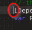
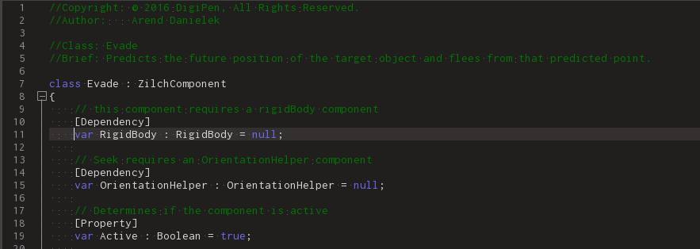
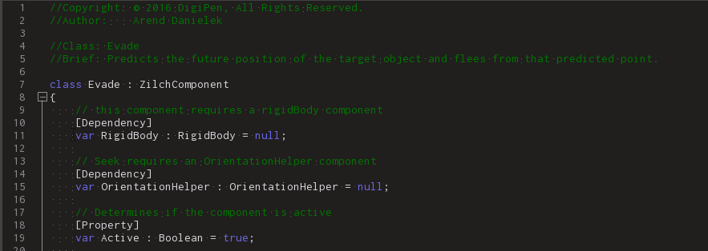
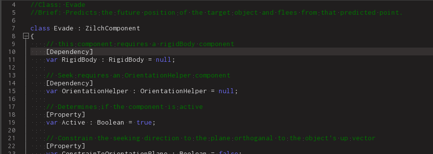
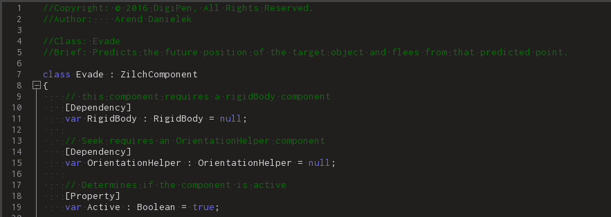
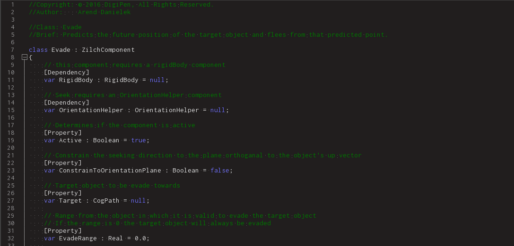
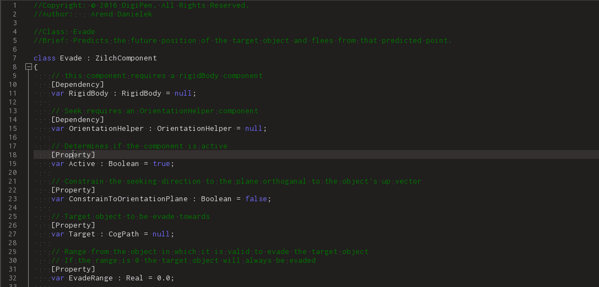

Text Editor Hotkeys
While Zero implements many features found in other common code editors, it also has many additional features users may find useful in their workflow.
Common Uses
- Editing custom Zilch Component/Tool/Command/Fragment
- Editing a
TextBlock
Using the Text Editor
The Cursor
The Cursor serves to indicate the location in a text file or script where new text will be entered. By default the cursor is set to insertion mode like most text editors. In insertion mode the cursor highlights the space between two characters. Pressing a character key will insert the character at the location of the cursor.

Moving The Cursor By Character
The cursor can be moved left, right, up, and down between characters using the arrow keys. You can also move the cursor by clicking on any space between two characters to move the cursor to that location.
Left,Right,Up, andDown

LeftClick

Moving The Cursor By Token & Whitespace
Often in a text file a single character will not have much meaning in the context of the whole file. So at times it make sense to navigate code at the conceptual level one is thinking about it. By using Control and an arrow key we can moving the cursor by token jumping over characters which belong to the previous or next token or whitespace sequence.
Control+Left

Control+Right

Moving the File
Continuing the trend of minimizing unnecessary mouse use while typing in the text editor the hotkeys Control + Up & Control + Down can be used to scroll the file view up and down.
Control+UpControl+Down

Multi-Cursors
The Zero text editor has the capability of placing multiple cursors in the file from which one is currently editing. Holding Control while clicking in the text file will result in the placement of additional cursors instead of moving the original cursor.

Each of these cursors can be expanded uniformly into a selection using the various methods of selection outlined below. Keep in mind that each keystroke will be applied to each cursor and/or selection. This is particularly useful when there are multiple identical constructs that need to be identically modified.
Column Cursors
Another form of cursor is the vertically extended column cursor. A column cursor can be created from a standard cursor by holding Alt + Shift and pressing Up or Down.
Alt+Shift+Up

Alt+Shift+Down

Selection
Cursors can be extended into selections, allowing the user to modify entire sections of text.
Row & Token Selection
To use row selection using the only the keyboard, Shift should be held while performing standard cursor commands.
By holding Shift + Left characters are selected along the row. If Shift + Right is held the selection cursor box will continue expanding to the right until it wraps around with the text to the next row.
To select entire rows with each keystroke use Shift + Up, or Shift + Down can also be used.
This is the same behavior one would get if one were to Click & Drag in the text file.

Shift can also be held while clicking to extend the current cursor or selection.

Row Selection by Token and WhiteSpace
Row selection can be done by token just as you can move the cursor with Control + Left and Control + right.
Control+Shift+LeftControl+Shift+Right
Token & Line Selection
One can also select any given token by double clicking it, an entire line can be selected by triple clicking it.

Once a token is selected to can add the next instance of that token to appear in the file to the selection by pressing Control + D.

Column Selection
Note
Column selection is also sometimes called rectangle selection.
Column selections can be created in various ways with and without a preexisting column cursor.
Creating a Column Selection From a Standard Cursor
By holding Alt + Shift and then pressing Left Click you can create a column selection that covers all character between the cursor and the point clicked.
Expanding a Column Cursor Into a Selection
Alt + Shift and Left or Right can be used to expand an existing column cursor into a column selection.

Alt + Shift and Up or Down can be used to expand an existing row selection into a column selection.

Selecting the Entire File
To select all text in the focused file use the Control + A hotkey.

Row Operations
Some hotkeys perform a basic operation on the row that the cursor is currently on.
Commenting
To quickly comment in and out all lines on which cursors/selections exist use the Control + K hotkey.
Duplication
Use the Control + Shift + D hotkey to duplicate each line with a cursor on it.

Deletion
Use the Control + L hotkey to quickly remove each line with a cursor on it from the file.

Swapping
Use the Control + T hotkey to quickly swap each line with a cursor on it with the line above it with out moving the cursor.

The hotkeys Control + Shift + Up or Control + Shift + Down to swap each line with a cursor on it with the line above or below it.
This command also shifts the cursor to the newline. This allows the line to be continuously shifted up or down by repeating the hotkey sequence.
Clipboard Operations
The Zero Editor supports the standard clipboard operations of copy, cut, and paste. To copy selected text to the clipboard use the Control + C hotkey. To copy selected text to the clipboard and remove it from the file use the Control + X hotkey. To paste the text from the clipboard to the location of eah cursor in a file use the Control + V hotkey. All three operations are shown in the gif below.

Undo & Redo
To undo a previous operation use the Control + Z hotkey. To redo a previous operation use the Control + Y hotkey.

Search Operations
The search tool is useful for finding instances of specific text through out individual files or an entire project.
Find Mode
To quickly access the search window in find mode use the Control + F hotkey.

If there is an active selection in the current text file, it will be pasted in as the search argument upon opening the window. Notice that because the search window is in find mode it will find locations of the given text but not modify them.
Replace Mode
To quickly access the search window in replace mode use the Control + F hotkey.

If there is an active selection in the current text file, it will be pasted in as the search argument upon opening the window. Notice that because the search window is in replace mode it will find locations of the given text and replace them with whatever string is in the replace field of the search window.
Go to Definition
One of the most common patterns while programming is to reference the definition of a particular type being used. This can be done in Zero via a shortcut.
When the user right clicks in a text file GoToDefintion is listed as an option in the context. If the context menu option is chosen, then the definition of the type currently highlighted by or containing the cursor will be displayed in the file that contains it. This functionality can also be activated by pressing F12 while the text editor cursor is highlighting or sitting within a valid type.
Window Operations
Some hotkeys used in the text editor will not actually affect the text file or cursor. By using the Ctrl + Tab and Ctrl + Shift + Tab hotkey sequences the tabs in the main docked window can be cycled through to the right and left, respectively.
Control+TabControl+Shift+Tab

Hotkey Reference
The tables below are meant for both quick reference via the name column as well as more detailed information in the description column.
Keyboard Sequences
| Keyboard Command | Brief |
|---|---|
Left |
Move cursor left by character |
Right |
Move cursor right by character |
Up |
Move cursor up one row |
Down |
Move cursor down one row |
Control + Left |
Move cursor left by symbol |
Control + Right |
Move cursor right by one symbol |
Control + Up |
Scroll file up |
Control + Down |
Scroll file down |
Control + F |
Open the search window in find mode |
Control + H |
Open the search window in replace mode |
F12 |
Go to Definition of the highlighted type. |
Control + A |
Select all text in the file |
Control + T |
Swap line with the row above without the cursor |
Control + K |
Comment/Uncomment current line |
Control + L |
Delete current line |
Control + S |
Save project |
Control + Z |
Undo last action |
Control + Z |
Redo last action |
Control + X |
Cut current selection |
Control + C |
Copy current selection |
Control + V |
Paste from the clipboard |
Control + = |
Increase font size |
Control + - |
Decrease font size |
Control + Tab |
Cycle to the next tab in the window |
Control + Shift + Tab |
Cycle to the previous tab in the window |
Control + Shift + D |
Duplicate the line the cursor is on |
Control + Shift + Up |
Swap line with row above with the cursor |
Control + Shift + Down |
Swap line with row below with the cursor |
Control + Shift + Left |
Row selection/deselection left by symbol |
Control + Shift + Right |
Row selection/deselection right by symbol |
Shift + Left |
Row selection/deselection to the left by character |
Shift + Right |
Row selection/deselection to the right by character |
Shift + Up |
Row selection/deselection up by character |
Shift + Down |
Row selection/deselection down by character |
Alt + Shift + Left |
Column selection/deselection left by character |
Alt + Shift + Right |
Column selection/deselection right by character |
Alt + Shift + Up |
Column selection/deselection up by row |
Alt + Shift + Down |
Column selection/deselection down by row |
Mouse Actions
| Mouse Command | Brief |
|---|---|
Left Click |
Move cursor |
Left Click x2 |
Select token |
Left Click x3 |
Select entire line |
Left Click + Drag |
Row selection |
Control + Left Click |
Create additional cursor |
Shift + Left Click |
Row selection |
Alt + Shift + Left Click |
Column selection |